Viranium Labs is a research lab studying whether living neural tissue can serve as the predictive core of a machine's world model.
Robots plan by imagining. Before a machine moves, it runs a model forward to ask what happens next. Today that imagination runs on silicon, which represents the world as numbers and shuffles them according to rules we wrote. The chip has nothing in common with the thing it is describing. It is expensive, and it never learns physics, only which states tend to follow which.
Cortex does not simulate prediction. Prediction is what the tissue does, unbidden, because of how it is wired. We are testing whether that difference can be built on.
The substrate should do the work
Physics as the operation, not the output. A silicon world model computes its dynamics symbolically. Every imagined moment is a full pass through a network that has no physics of its own. A living network evolves in time because it is a physical system. Letting it run for a hundred milliseconds is the prediction, not a description of one.
Learning without gradients. Every deployed model today is frozen at whatever it learned before shipping. Cultured neurons reorganize continuously to make their input less surprising, with no separate training phase and no loss function anyone wrote down. We do not yet know how to specify that mechanism. That is precisely why it is worth studying.

Time comes for free. A silicon model chops time into discrete steps and compounds error across them. Tissue lives in continuous time. The substrate has duration built in, because it is made of matter rather than arithmetic.
Start with the smallest honest question

One falsifiable question at a time. Every demonstration in biological computing to date is categorical: up or down, hit or miss. A physical state is continuous. Before anything else can be built, someone has to measure whether a living network can hold the difference between forty-seven degrees and fifty-one. Nobody has. We are starting there.

A failure is a measurement. Cultured networks fire in synchronized bursts that can erase whatever pattern was written into them. If that ceiling turns out to be low, the number is still the number the field needs. We would rather publish a hard limit than a promise.

Simulation before tissue. The first experiments run on spiking network models, where iteration is free and every parameter is ours to vary. What survives contact with simulation is what earns time on real hardware.
Open by default
Findings, methods, and code. This is a small field working on a long problem, and progress in it is collective. We intend to publish what we learn, including the results that do not go our way.